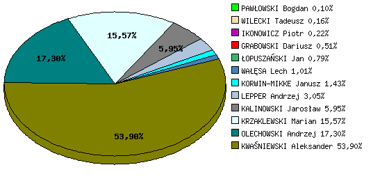
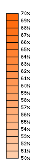
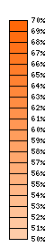

Procentowa liczba głosów dla poszczególnych kandydatów

Wyniki poszczególnych kandydatów
| Kandydat |
Liczba głosów oddanych na kandydata |
Liczba wszystkich ważnych głosów |
Procentowa liczba głosów oddanych na kandydata |
| GRABOWSKI Dariusz |
89 002 |
17 598 919 |
0,51 |
| GRABOWSKI Dariusz |
89 002 |
17 598 919 |
0,51 |
| KWAŚNIEWSKI Aleksander |
9 485 224 |
17 598 919 |
53,90 |
| IKONOWICZ Piotr |
38 672 |
17 598 919 |
0,22 |
| KALINOWSKI Jarosław |
1 047 949 |
17 598 919 |
5,95 |
| KORWIN-MIKKE Janusz |
252 499 |
17 598 919 |
1,43 |
| KRZAKLEWSKI Marian |
2 739 621 |
17 598 919 |
15,57 |
| LEPPER Andrzej |
537 570 |
17 598 919 |
3,05 |
| ŁOPUSZAŃSKI Jan |
139 682 |
17 598 919 |
0,79 |
| OLECHOWSKI Andrzej |
3 044 141 |
17 598 919 |
17,30 |
| PAWŁOWSKI Bogdan |
17 164 |
17 598 919 |
0,10 |
| WAŁĘSA Lech |
178 590 |
17 598 919 |
1,01 |
| WILECKI Tadeusz |
28 805 |
17 598 919 |
0,16 |
Frekwencja
 

Statystyka ogółem
- Liczba uprawnionych do głosowania: 29 122 304
- Liczba wydanych kart do głosowania: 17 798 791
- Liczba kart wyjętych z urny: 17 789 231
- Liczba ważnych głosów: 17 598 919
- Liczba nieważnych głosów: 190 312
- Frekwencja: 61,12%